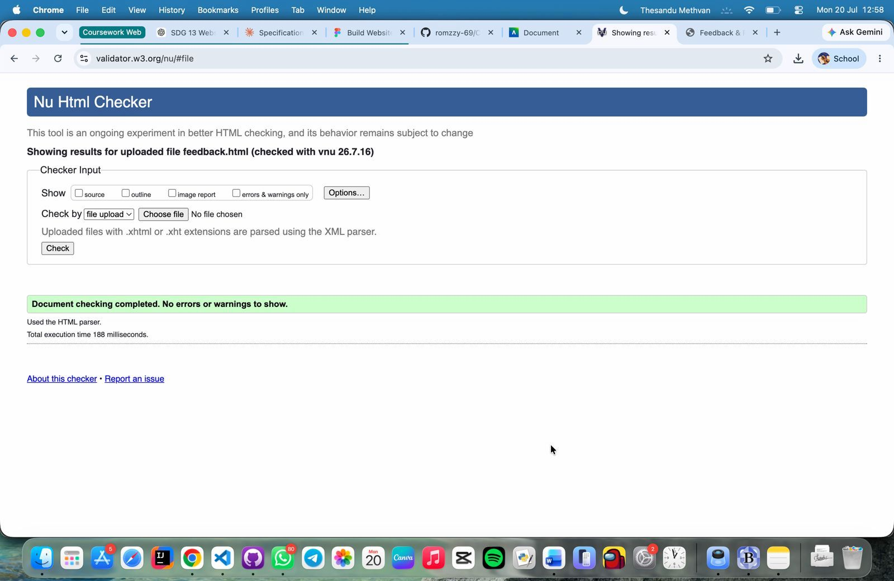
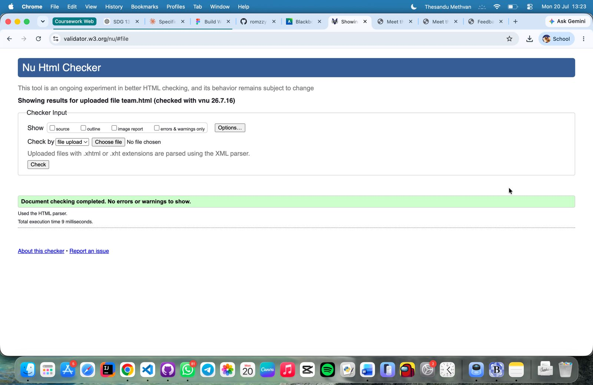
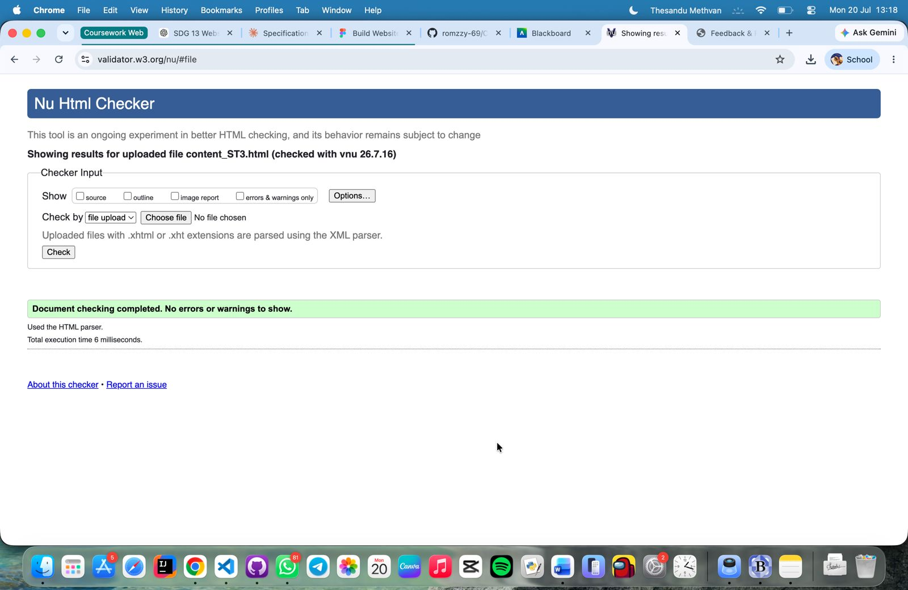

Feedback
Validation Result
The Feedback Page was validated using the W3C HTML Validator. Initially, the validator flagged
a small number of issues: two consecutive-hyphen comments that made the document unmappable to
XML, one missing space between attributes on an <img> tag, and four instances
of aria-label being used on <div>/<span>
elements without a valid ARIA role. I fixed the comments, added the missing space, and added
role="img" to each star-rating element so the labels were valid while keeping the
exact same visual design. After these fixes, the page passed with no errors or warnings.

Link to page
Back to Page Editor
Team Page
Validation Result
The Team Page was validated using the W3C HTML Validator. The validator returned nine
informational messages about trailing slashes on void elements (<meta>,
<link>, and <img> tags), which I cleaned up since HTML5
does not require them. It also raised a warning that my <section class="team-grid">
lacked a direct identifying heading, even though each team card had its own nested
<h2>. I fixed this by adding a visually hidden <h2> as the
first child of the section, satisfying the accessibility outline without altering the visible
card layout. The page now passes with no errors or warnings.

Link to page
Back to Page Editor
{kind=link}
Content Page (Student 3)
Validation Result
The Content Page was validated using the W3C HTML Validator. The validator returned five
informational messages about trailing slashes on void elements (<meta>,
<link>, and <img> tags), which I removed. It also raised a
warning because my <article> element lacked a direct identifying heading,
even though each of its six sections had its own <h2>. I fixed this by adding
a visually hidden <h2> directly inside the article to satisfy semantic rules
without affecting the visual design. The page now passes with no errors or warnings.

Link to page
Back to Page Editor
Reflection on Validation
Running my pages through the W3C Validator surfaced several issues that weren't visible just
by looking at the rendered layout. Across all three pages, the validator flagged trailing
slashes (/>) on void elements like <meta>,
<link>, and <img>, which used to be common practice but is
unnecessary in HTML5. Cleaning this up globally made my markup more consistent with modern
standards.
On the Feedback Page, the validator caught two comments using double hyphens, which made the
document unmappable to XML, and an aria-label attribute used on <div>
and <span> elements without a matching ARIA role. Adding role="img"
to the star-rating elements resolved this while keeping the star ratings visually identical.
Both the Team Page and Content Page raised a heading-outline warning: the
<section class="team-grid"> and <article> elements each
lacked a direct identifying heading, even though nested sections and cards had their own
headings. In both cases I added a visually hidden heading to satisfy the accessibility outline
without changing the visible design.
I also ran into a heading-level issue on my Page Editor document itself, where the student
name heading and the "Pages Developed" sidebar heading were skipping levels once a proper
<h1> was introduced. Rather than changing the visible name heading (to keep
the same format as the rest of the team), I added an invisible <h1> so the
document had a valid outline without altering what readers actually see.
Overall, this process reinforced that a page can look correct in the browser while still having structural issues underneath. Validating my pages pushed me to write cleaner, more accessible HTML that holds up to modern web standards.